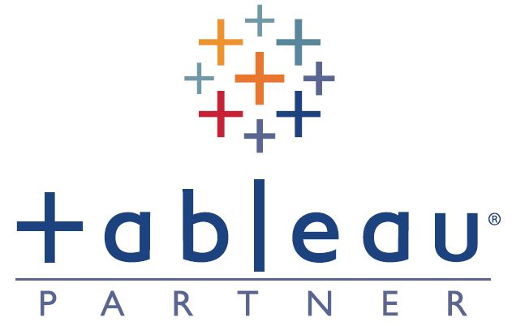

使用SQL对纳什维尔住房数据进行清洗与标准化处理，包括地址字段拆分、缺失值填充、字段格式统一与重复值清除，应用多种字符串函数确保数据可追溯性，输出结构化分析就绪的数据集。
This project involved systematic cleaning and standardization of the Nashville housing dataset, resulting in a structured, analysis-ready deliverable.

该项目对全球COVID-19疫情数据进行了多维度分析，包括感染率、死亡率和疫苗接种进度等核心指标，为疫情趋势研判提供了数据支持。
Comprehensive COVID-19 data analysis covering infections, deaths, and vaccination trends for multi-perspective insights.

Tableau数据分析项目，包括对全球COVID-19疫情的分析，Airbnb住房市场的数据可视化研究等。Featuring analysis of global COVID-19 trends and Airbnb housing market visualizations. Click below to explore interactive dashboards.
本项目对麦当劳消费者数据进行聚类分析与可视化，识别出三类典型人群，揭示其在饮食偏好、人口特征和行为习惯上的差异，助力精准营销。This project clustered McDonald's consumers into three distinct groups and visualized key differences in food preferences, demographics, and behaviors to support targeted marketing.

自动化分析懂车帝问答数据，涵盖爬虫采集、词频语义分析与可视化展示，全面洞察汽车用户关注热点与社区内容运营特征。Automated analysis of Dongchedi Q&A data through web scraping, semantic processing, and interactive visualization, revealing key user interests and community content patterns.